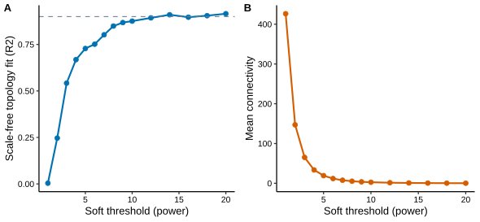
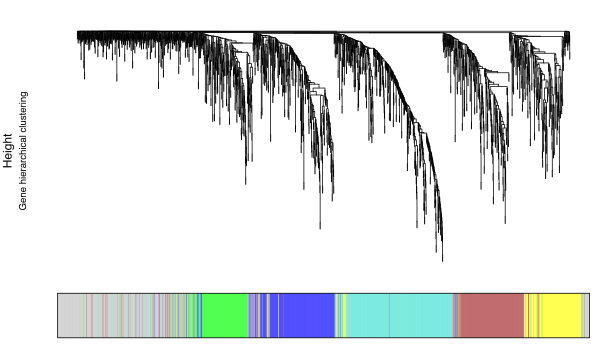
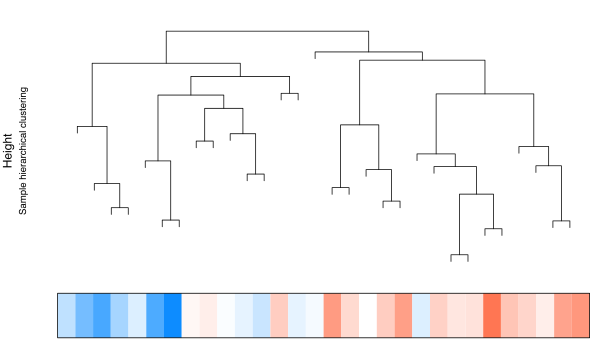
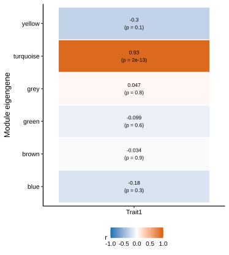
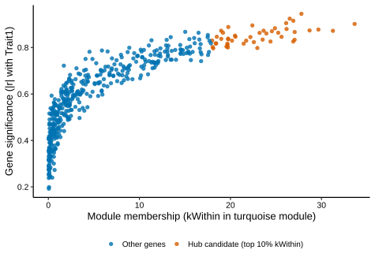

WGCNA 完整实战：从软阈值到模块-性状解读
一篇讲完共表达网络：软阈值怎么定、模块怎么验、模块-性状热图怎么读、hub gene 怎么筛——附可复现 R 代码与全流程图解。
WGCNA：从单基因到共表达模块
WGCNA（Weighted Gene Co-expression Network Analysis）1,2回答的是另一类问题：「哪些基因在样本中一起变化，并且和表型相关」。它不看单个基因的组间差异，而是把表达相关的基因组织成模块，再用模块特征向量（eigengene）与临床表型做关联。
| 维度 | 差异分析 | WGCNA |
|---|---|---|
| 核心问题 | 哪些基因在两组间显著变化？ | 哪些基因呈现相似表达模式？ |
| 分析对象 | 单个基因 | 基因模块（共表达群组） |
| 主要依据 | 组间均值差异 | 基因之间的相关性 |
| 输出结果 | 上调 / 下调差异基因 | 共表达模块、模块‑表型相关、hub genes |
两者是互补关系，不是替代关系：差异分析提供「候选点」，WGCNA 提供「网络结构」和「表型关联」。单基因差异 + 共表达模块，才能拼出更完整的机制线索。
三步流程与核心价值
- 第一步 · 计算相似性：计算基因间表达相关性，选择软阈值（power）强化强相关，构建加权共表达网络；
- 第二步 · 聚类成模块：基于拓扑重叠聚类，识别共表达模块（蓝色、棕色模块等），每个模块代表一群协同变化的基因；
- 第三步 · 关联表型：计算模块特征向量（eigengene），与临床表型做相关分析，筛选关键模块与 hub genes。
三个核心价值：① 整理零散基因——差异分析常得到几百到几千个基因，WGCNA 把它们组织成有结构的模块；② 连接临床表型——可关联年龄、分期、生存等连续变量，形成比「某基因上调」更完整的机制解释；③ 筛选 hub genes——模块内连接度最高的核心基因，常用策略 DEG ∩ 关键模块 ∩ hub genes，让候选基因证据更强。
R 示例代码：一条最小可用流水线
library(WGCNA)
options(stringsAsFactors = FALSE)
enableWGCNAThreads()
## ① 输入：表达矩阵（WGCNA 要求行=样本、列=基因）；低表达过滤后取高变基因
datExpr <- t(expr_filtered)
gsg <- goodSamplesGenes(datExpr, verbose = 3) # 检查缺失与零方差
if (!gsg$allOK) datExpr <- datExpr[gsg$goodSamples, gsg$goodGenes]
## ② 选软阈值：达到「无标度拓扑」的最小 power
powers <- c(1:10, 12, 14, 16)
sft <- pickSoftThreshold(datExpr, powerVector = powers, verbose = 5)
softPower <- sft$powerEstimate # 若为 NA，先回头检查数据质量而不是硬跑
## ③ 一步法构建网络：聚类成模块（样本 ≥ 15 再做这一步）
net <- blockwiseModules(datExpr, power = softPower,
TOMType = "unsigned", minModuleSize = 30,
mergeCutHeight = 0.25, numericLabels = TRUE,
pamRespectsDendro = FALSE, verbose = 3)
moduleColors <- labels2colors(net$colors)
## ④ 模块–表型相关：结果必须经得起删样本、换 power 的扰动
MEs <- orderMEs(moduleEigengenes(datExpr, moduleColors)$eigengenes)
moduleTraitCor <- cor(MEs, traits, use = "pairwise.complete.obs")
moduleTraitP <- corPvalueStudent(moduleTraitCor, nrow(datExpr))软阈值是 WGCNA 第一个真正的决策点，不该拍脑袋定。看两张曲线：无标度拓扑拟合 R² 随 power 上升逼近 1（虚线为 0.9 参考线），而平均连接度随 power 衰减——power 太小网络完全连接、模块无意义；power 太大连接度趋零、只剩孤立点。经验法则是取 R² 首次接近 0.9 且连接度仍可接受的最小 power（本例 power = 9）。无标度网络假设出自 Zhang & Horvath 的原始框架2。

模块划分质量：先看地基，再看热图
基因聚类树与模块颜色带是 WGCNA 的「地基」。上方为基因层次聚类树，下方色带是 blockwiseModules 的模块划分结果——每个颜色一个模块（turquoise、blue、brown……），grey 表示未分配基因。

健康的模块划分长什么样
- 分支清晰、色带成块——每个模块对应树上一段独立分支；
- 模块大小适中（几十到几百个基因，本文
minModuleSize = 30）； - grey 占比有限。
需要警惕的信号
- 只有一两个大色块 → 模块划分太粗；
- 颜色特别碎 → 参数过于敏感；
- grey 模块过大 → 大量基因未被归入明确模块。
地基不牢，热图再红也没有意义。模块分得不稳，后面相关性再漂亮也站不住脚——先修划分，再谈关联。
模块-性状热图怎么读
拿到热图之前，先看样本-性状结构：样本聚类树 + 性状色带。性状值沿树平滑渐变（下图），说明样本结构与表型一致；若个别样本孤立在树上、或色带出现断裂，先排查离群样本再往下做。

模块-性状热图每行 = 一个模块特征向量（MEturquoise、MEblue……），每列 = 一个表型性状。每个格子两层信息：上方数字是 Pearson 相关系数 r（方向 + 强度），括号内是 p 值（统计显著性）；色标为发散设计、以 0 为中心——朱红 = 正相关（模块↑ → 表型↑），蓝 = 负相关。

颜色只是提示，不能替你下结论
- 最常见误区：只盯最红的格子、把热图当「颜色深浅图」读、看到颜色深就下结论而忽略 p 值；
- 正确做法：r + p + 研究背景三者结合。
三看筛选法
- ① 看相关性强度：|r| ≥ 0.4–0.5 才值得关注，且 p 值显著——颜色深但 p 值不显著的格子不靠谱；
- ② 看与研究主题的匹配度：代谢研究关注体重/血糖/胰岛素，心血管研究关注钙化/动脉病变——与主题无关的性状，颜色再深也不适合做主线；
- ③ 看与多个表型的一致性：某模块同时与体重、脂肪、血糖正相关，更像一个「代谢状态模块」——比单独一个格子更有说服力。
性状之间也会相关，别把表型割裂开：模块与某个性状相关，不代表只和它有关。选模块 = 找与研究主线最贴近的模块，而不是颜色最深的模块。
从热图到关键模块：六步筛选法
- 看相关性：与核心性状的 r 和 p 值；
- 看一致性：是否与多个相关表型方向一致；
- 看模块大小：太小不稳定，太大太混杂（基因数 ≥ 30 起步）；
- GO/KEGG 富集：模块基因指向什么功能？（参见 No.005、No.036）；
- 筛 hub gene：结合 MM 与 GS 双指标（见下节）；
- 外部验证：跨数据集或实验验证。
优先级：与目标表型显著关联 + 基因数达标 > 多表型一致 + 功能富集有意义；跳过 grey 模块与 p 值不显著的小模块。不是所有模块都要做富集，聚焦核心即可。关键模块不是热图上直接「点名」的，而是一步步筛出来的。
hub gene 交叉验证：MM × GS 双高
模块内连接度 kWithin（module membership，MM）衡量基因在模块中的「中心程度」，基因显著性（gene significance，GS = |r(基因, 性状)|）衡量它与表型的关联。真实模块的典型特征是 MM 与 GS 呈饱和曲线关系——连接度高的基因往往也与表型更相关。候选 hub 取双高基因（如 kWithin 前 10% 且 GS 高）。

注意：hub gene 对样本量极其敏感——模块本身不稳定，hub 必然漂移。同一数据换个软阈值、删一个异常样本、重选高变基因，Top hub 名单就可能全变。hub 也不一定是「核心机制基因」，需结合差异分析、富集与实验验证。
样本量：最容易被忽略的硬门槛
代码能跑出结果 ≠ 结果可信。WGCNA 官方 FAQ 建议至少 15 个样本，最好 20 个以上1。十几二十个样本硬跑 WGCNA，常常能得到 r = 0.9 的漂亮模块–表型相关热图——但参数一变（换个软阈值、去掉一个样本）模块就消失了。样本越少，模块越「漂亮」，也越不可信：小样本下拓扑重叠的估计方差极大，模块结构很大程度上是统计假象。
相关性虚高的典型现象：n = 12 时模块与表型 r = 0.85；删掉 1 个离群样本 → r 跌到 0.4；换一种缺失值处理方法 → 最相关模块变了。单个高表达样本就能拉高整个相关系数——高相关 ≠ 信号强，大概率是统计假象。
两个常见操作错误与稳定性检验
- 别拿差异基因跑 WGCNA：先筛 DEG 再跑 WGCNA = 自欺欺人——人为预设了组间差异，后续「模块与疾病高度相关」只是前期筛选带来的人为偏差。正确做法是用低表达过滤后的大部分基因（或一定数量的高变基因），从全局共表达网络中无偏挖掘模块；
- 别跳过稳定性测试：删除一个样本重新分析——关键模块还在吗？更换合理范围内的软阈值——模块划分大幅变化吗？调整高变基因数量——候选模块与 hub 稳定吗？有独立队列时做模块保留性分析（module preservation）3——模块的 Zsummary 强度直接回答「这个模块在另一套数据里还在吗」。
稍微改参数结果就变 → 稳定性有限；关键模块、功能方向、候选基因在不同设置下仍相近 → 结果才值得继续往下做。
常见误区澄清
- 「WGCNA 和差异分析是重复的」→ 两者互补，不是替代；
- 「hub gene 一定是核心机制基因」→ 需结合差异分析、富集、验证等证据；
- 「模块与表型相关 = 因果关系」→ 相关 ≠ 因果，WGCNA 发现关联，验证靠实验；
- 「模块颜色有生物学意义」→ 颜色只是标签，基因内容才是关键；
- 「样本少也能做 WGCNA」→ 样本量不足时结果不稳定，宁可不做。
一句话总结：WGCNA 真正有价值的，是找到能够重复出现的共表达结构，并把复杂的表达矩阵讲成一个有结构的生物学故事。软阈值有依据 → 模块分得稳 → 热图 r+p+背景三看 → hub 双高 → 跨数据集保留——每一步都经得起扰动，结论才站得住。
延伸阅读与参考文献
- Langfelder P, Horvath S. WGCNA: an R package for weighted correlation network analysis. BMC Bioinformatics. 2008;9:559. doi:10.1186/1471-2105-9-559
- Zhang B, Horvath S. A general framework for weighted gene co-expression network analysis. Statistical Applications in Genetics and Molecular Biology. 2005;4:Article17. doi:10.2202/1544-6115.1128
- Langfelder P, Luo R, Oldham MC, Horvath S. Is my network module preserved and reproducible? PLOS Computational Biology. 2011;7(1):e1001057. doi:10.1371/journal.pcbi.1001057